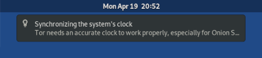

This release fixes known security vulnerabilities. You should upgrade as soon as possible.
Changes and updates
Remove "Synchronizing the system's clock" notification when connecting to Tor network
We removed this notification because it didn't recommend a specific action for users to take and it was unclear. It might have given users the impression that they should alter their UTC clock settings. (#7439)

Remove Poedit
We now use Weblate to provide translated text for Tails and the Tails website, so Poedit isn't as necessary. To install Poedit in Tails, see our guide on Additional Software (#18236)
Update Tor Browser to 10.0.16.
Update Thunderbird to 78.9.0-1.
Update some Intel and Linux firmware packages. This should improve support for newer hardware (graphics, Wi-Fi, and so on).
Fixed problems
Use more reliable Debian repositories
Tails now connects to the APT repositories of Debian using their HTTPS address instead of their .onion address, for increased reliability with the Additional Software feature. We left other Tails and Tor Project APT onion sources as is. (#17993)
Display an error message when the Upgrader fails to download the signing key. This has been a silent error since 4.14. (#18238)
For more details, read our changelog.
Known issues
Automatic upgrades are broken from Tails 4.14 and earlier.
To upgrade from Tails 4.14 or earlier, you can either:
Do a manual upgrade.
Fix the automatic upgrade from a terminal. To do so:
Start Tails and set up an administration password.
In a terminal, execute the following command:
torsocks curl --silent https://tails.boum.org/isrg-root-x1-cross-signed.pem \ | sudo tee --append /usr/local/etc/ssl/certs/tails.boum.org-CA.pem \ && systemctl --user restart tails-upgrade-frontendThis command is a single command that wraps across several lines. Copy and paste the entire block at once and make sure that it executes as a single command.
Approximately 30 seconds later, you should be prompted to upgrade to the latest version of Tails. If no prompt appears, you might already be running the latest version of Tails.
See the list of long-standing issues.
Get Tails 4.18
To upgrade your Tails USB stick and keep your persistent storage
Automatic upgrades are broken from Tails 4.14 and earlier. See the known issue above.
Automatic upgrades are available from Tails 4.14 or later to 4.18.
If you cannot do an automatic upgrade or if Tails fails to start after an automatic upgrade, please try to do a manual upgrade.
To install Tails on a new USB stick
Follow our installation instructions:
The Persistent Storage on the USB stick will be lost if you install instead of upgrading.
To download only
If you don't need installation or upgrade instructions, you can download Tails 4.18 directly:
What's coming up?
Tails 4.19 is scheduled for June 1.
Have a look at our roadmap to see where we are heading to.
We need your help and there are many ways to contribute to Tails (donating is only one of them). Come talk to us!